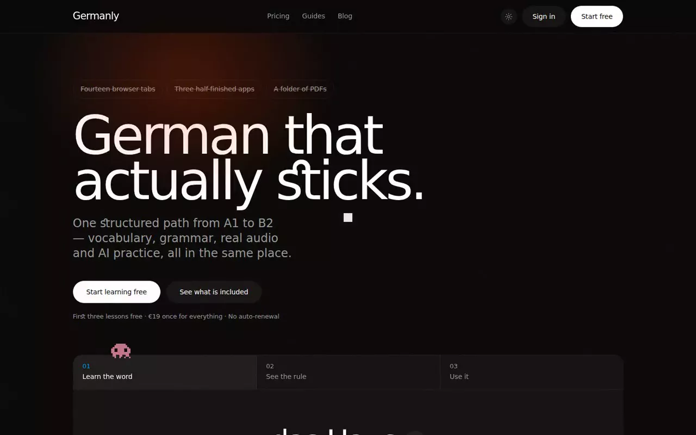
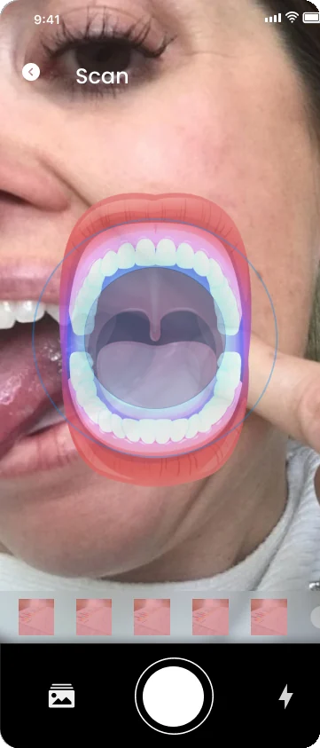
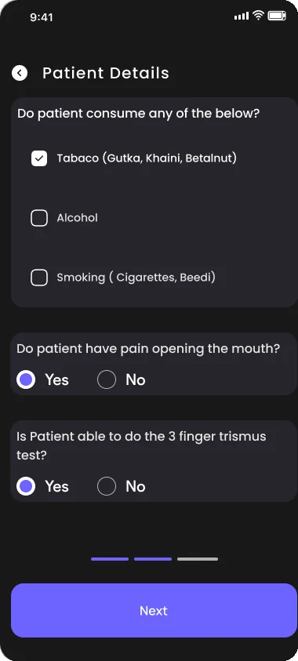
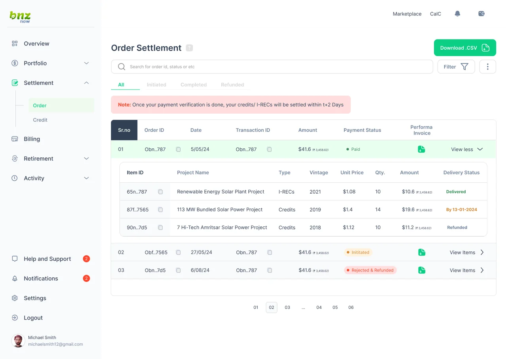

Case studies
Products I researched, designed and shipped, with the decisions behind them.
01 · 2026
Read the case study
Germanly
Why people fail at languages with apps built for retention, and what I changed. 120+ learners, a CHI 2027 paper under review.
UX ResearchProduct DesignDesign SystemAI

02 · 2023
Read the case study
Oncarea
Why rural oral cancer screening breaks long before the AI does, and a doctor led system where AI only assists. Chanakya Fellowship, IIT Roorkee.
HealthcareUX ResearchSystem DesignApp and Web


03 · Dashboard
Read the case study
BNZ
Redesigning the orders, billing and transactions of a carbon credit marketplace, so every credit is accounted for.
Product DesignDesign AuditDashboardMobile
